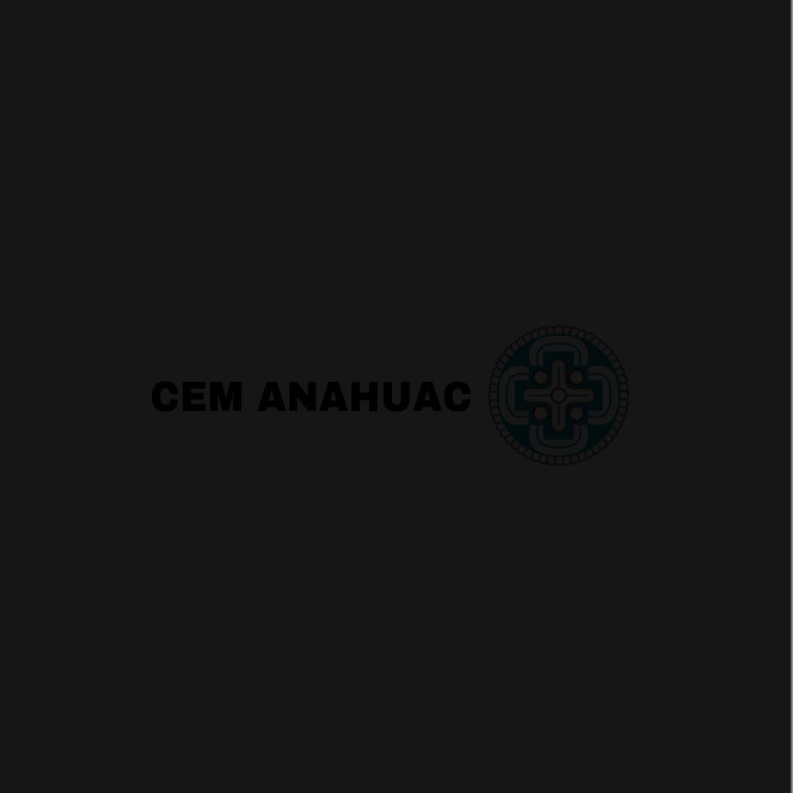
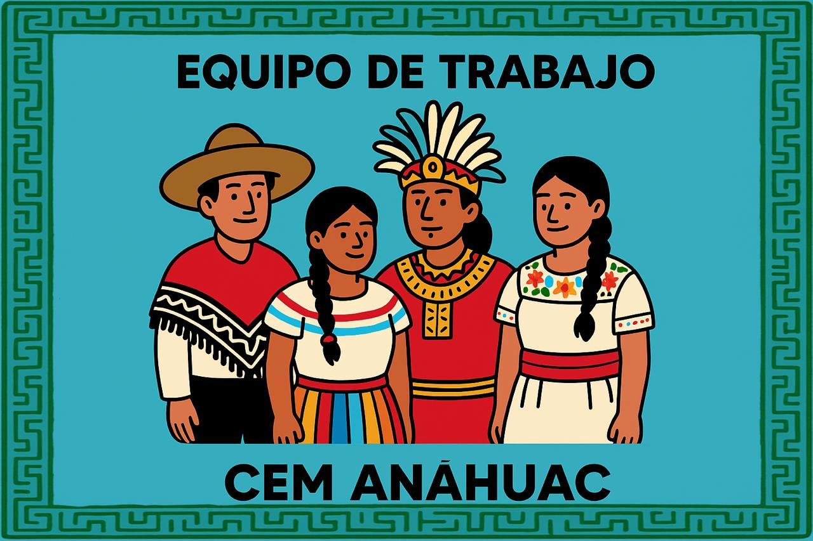
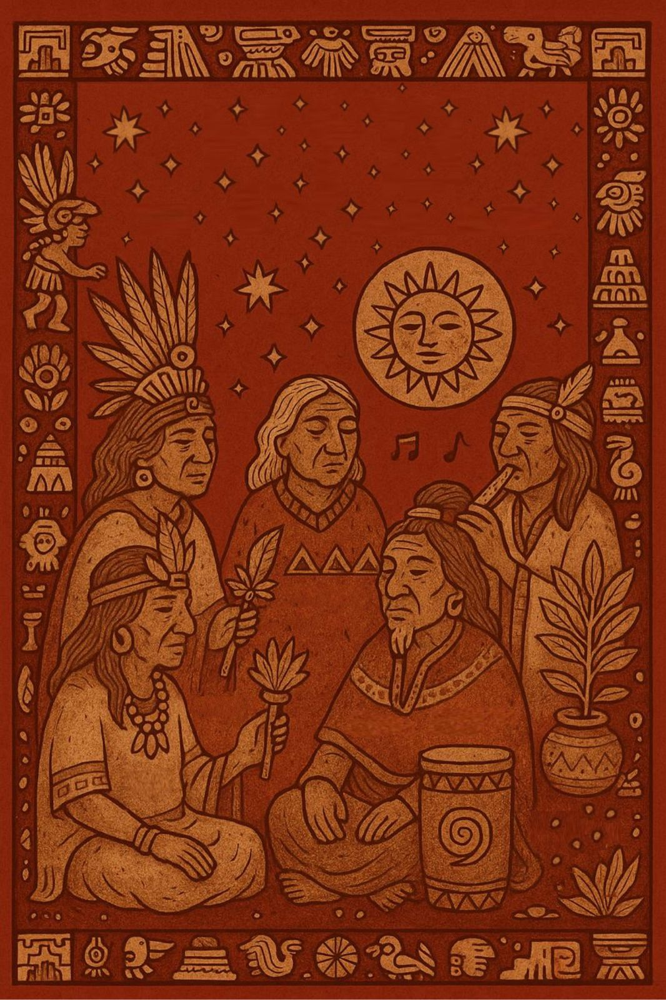
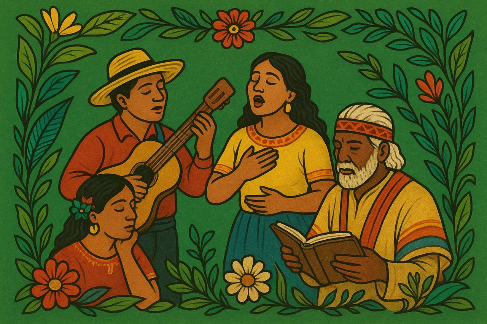
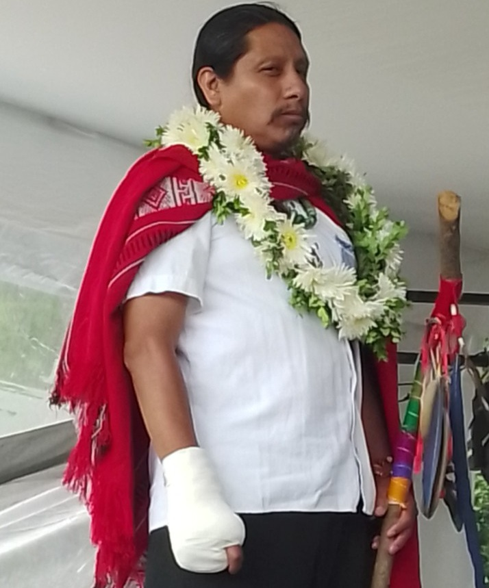
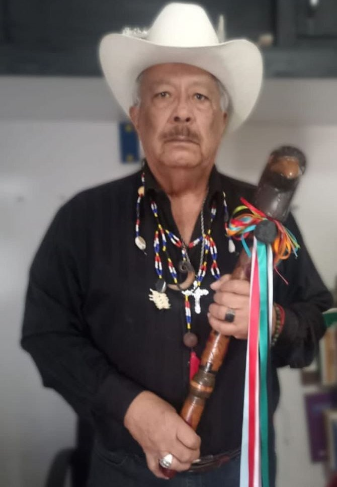
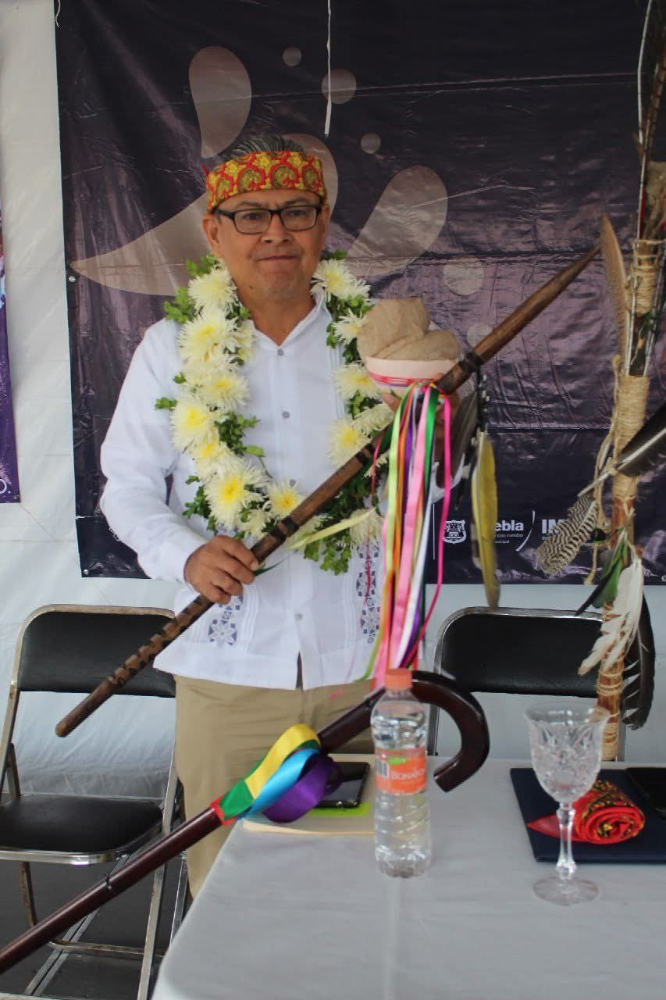
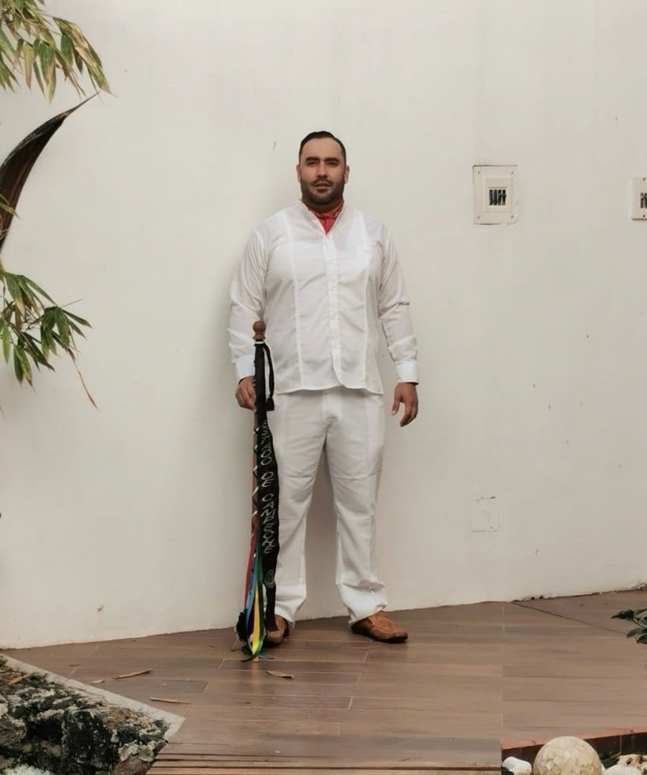

Nuestro Equipo
Conoce al equipo que hace posible esto.
-
CEM ANÁHUAC
-
Consejo Administrativo
-  
-
Consejo Ancestral de los Abuelos
- 
-
Consejo de la Flor y el Canto
- 
-
Consejo Administrativo

Josué Ángel Quénel Pérez
Representante
Gloria Hernández Velázquez
Tesorero

Israel Martínez Valencia
Subtesorero

Felipe Cervantes Mardueño
Secretario de Actas y Acuerdos

Luis Arturo Hernández Espinosa
Subsecretario

Iván Alejandro Martínez Rebolloso
Presidente del Consejo de Vigilancia
Consejo Ancestral de los Abuelos
Juan Bautista Ramírez Juárez

Nombre 2
Puesto 2
Consejo de la Flor y el Canto
Víctor Manuel Rivera Gómez Franco
Investigador
Nombre 2
Puesto 2